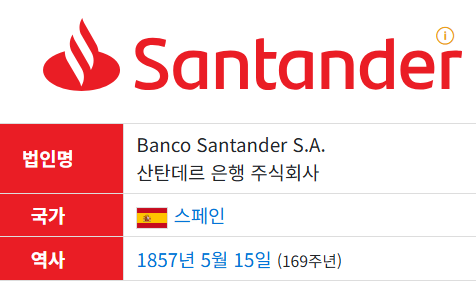

[14차시_SVM] 산탄데르은행 고객만족 프로젝트
SVM로 은행 고객의 만족 요소 찾기


| 구분 | 주요 내용 |
|---|---|
| 개요 | 스페인 본사의 유럽 최대 규모 글로벌 금융 그룹 |
| 설립 및 역사 | 1857년 스페인 산탄데르 지역 은행으로 시작 후 적극적인 인수합병(M&A)을 통해 대형화 |
| 본사 위치 | 스페인 마드리드 (법적 본점: 스페인 산탄데르) |
| 주요 진출 지역 | 유럽(스페인, 영국, 포르투갈, 폴란드), 중남미(브라질, 멕시코), 북미(미국) |
1.1. 사이킷런 불러오기
!pip install koreanize-matplotlib
import numpy as np
import pandas as pd
import seaborn as sns
import matplotlib.pyplot as plt
import koreanize_matplotlib
from sklearn.model_selection import train_test_split
from sklearn.svm import SVC
# 분류모델 성능 평가를 위해 필요함.
from sklearn.metrics import confusion_matrix, classification_report, accuracy_score, precision_score, recall_score, f1_score1.2. 훈련 데이터(train_santander.csv) 불러온 후 샘플 출력하기
- cust_df 변수에 저장하기
- read_csv( ) 사용하기
- TARGET: 0은 만족, 1은 불만족

3 rows × 371 columns

| 구분 | 키워드 / 피처명 | 추정 의미 |
|---|---|---|
| 핵심 변수 | var3 | 고객의 국적 또는 국가 코드 (최다 빈도값 2는 스페인을 의미, -999999는 결측치) |
var15 | 고객의 나이 (Age) | |
var38 | 고객의 예치 자산 가치 / 추정 유산 (Mortgage / Wealth Value) | |
| 접두사 (Prefix) | ind (indicador) | 특정 상품 보유 여부 및 지표 (0 또는 1의 Binary 데이터) |
num (número) | 거래 횟수, 보유 계좌 수 등 수량 지표 | |
saldo | 계좌 잔액 | |
imp (importe) | 입출금액, 결제액 등 거래 금액 | |
delta | 일정 기간 동안의 잔액 및 수량 변화량 | |
| 금융 상품 (Product) | hip (hipoteca) | 주택 담보 대출 |
tj (tarjeta) | 신용카드 또는 체크카드 | |
nom (nómina) | 급여 이체 계좌 | |
valo (valores) | 유가증권 / 주식 투자 계좌 | |
fond (fondos) | 펀드 상품 | |
pres (préstamos) | 신용 대출 / 일반 대출 | |
| 속성 | comer (comercio) | 가맹점 결제 / 상업용 거래 |
efect (efectivo) | 현금 인출 거래 | |
ult1 / ult3 (último) | 최근 1개월 / 최근 3개월 이내 데이터 | |
mes | 월 단위 주기의 집계 데이터 | |
corto / largo | 단기 금융 상품 / 장기 금융 상품 |
| 구분 | 주요 내용 | 특징 |
|---|---|---|
| 데이터 | 371개 열(Column) 존재 | 피처 수가 매우 많아 피처 전처리 및 차원 축소/선택이 중요함. |
| 익명화 | var3, var15 등 변수명 익명화 | 개인정보 보호를 위해 실제 의미 대신 변수명으로 처리됨. |
| 종속 변수 | TARGET 열 | 고객 만족/불만족(0/1)를 맞히는 이진 분류 문제임. |
1.3. 데이터 프레임 요약 정보

<class 'pandas.core.frame.DataFrame'>
RangeIndex: 76020 entries, 0 to 76019
Columns: 371 entries, ID to TARGET
dtypes: float64(111), int64(260)
memory usage: 215.2 MB
1.4. 데이터 전처리(Preprocessing)
1.4.1. TARGET의 만족과 불만족 개수 확인
- value_counts( ) 사용하기

0 73012
1 3008
Name: TARGET, dtype: int64
1.4.2. 피처(데이터값)들의 평균, 표준편차, 4분위 분포도 확인
- describe( ) 사용하기
- var3의 min값 -999999는 이상치로 판단됨.

8 rows × 371 columns

1.4.3. var3 개수 확인
- value_counts( ) 사용하기


1.4.4. var3 -999999을 가장 많은 값인 2로 대체
- replace( ) 사용하기

1.4.5. 필요없는 ID 컬럼 삭제
- drop( ) 사용하기

1.4.6. corr( )함수로 상관계수 출력
- corr( )함수로 각 변수의 상관계수를 먼저 구함.
- +1에 가까우면 강한 양적 선형관계, -1에 가까우면 강한 음적 선형관계, 0에 가까우면 관계 없음.


1.4.7. 상관계수 중 상위 10개 정렬
corr: 전체 데이터프레임의 상관계수 행렬(Correlation Matrix) 객체
.loc[:'var38', 'TARGET']: 첫행부터 'var38' 행까지, 열은 'TARGET' 열 하나만 지정함.
.abs(): 상관계수 값에 절대값을 취함.
.sort_values(ascending=False): 내림차순(ascending=False)으로 정렬함. 상관계수가 높은 값이 위에 나타남.
[:10]: 정렬된 결과에서 상위 10개 항목만 슬라이싱하여 추출함.


1.4.8. 상관계수 중 상위 5개의 피처 출력


1.5. 피처 데이터와 레이블 데이터 분리
- 피처 데이터 (
cust_feature)cols상관계수가 높았던 상위 5개 변수만 포함됨.
'ind_var30','num_meses_var5_ult3','num_var30','num_var42','ind_var5'
- 레이블 데이터 (
cust_label)cols리스트의 마지막 열인 정답 데이터만 포함됨.('TARGET')

1.6. 학습 데이터와 테스트 데이터로 분리하기
- 학습 데이터: 80%, 테스트 데이터: 20%
- random_state=156
- 학습 데이터와 테스트 데이터의 비율을 맞추어서 데이터를 분리하기 위한 stratify 옵션


1.7. 서포트 벡터 머신(SVM) 알고리즘
- svc 변수에 저장하기
- 테스트 데이터의 예측 정확도가 가장 높게 나오도록 SVC 파라미터를 적절히 사용하기
1.7.1. SVC(결정 경계, C, gamma, degree)
- 결정 경계 종류
1. 방사기저함수-무한한 차원의 점으로 변환(kernel='rbf'), 기본값
2. 선형-2차원-선(kernel='linear')
3. 다항식-다차원-평면(kernel='poly')
4. 시그모이드(kernel='sigmoid')
- C 파라미터: C값이 적을수록 소프트마진(마진이 커짐), C값이 클수록 하드마진(마진이 작아짐.)
- gamma 파라미터: 결정 경계를 얼마나 유연하게 그을 것인지 결정, gamma값이 적을수록 결정 경계를 직선에 가깝게 그음. =’scale’은 자동 계산하는 기본값임.
- degree 파라미터: kernel='poly'인 경우 차원을 나타냄. 기본값은 3차원
1.8. fit 함수: 학습(X_train, y_train)


1.9. predict 함수: 예측(X_test → predict)

[0 0 0 0 0 0 0 0 0 0]
1.10. SVM 예측 정확도 출력


| 구분 | 주요 지표/설정 | 도메인 맥락 반영 수정 및 해석 |
|---|---|---|
| 모델 설정 | kernel='linear' | 370개의 고차원 피처 데이터에 대해 단순 선형 경계(Linear Hyperplane)만 적용하여 불만족(1) 레이블을 세밀하게 분리해내지 못함. |
| 정확도 | 96% (0.96) | 고객의 약 96%가 '만족(0)' 상태인 불균형 데이터셋 특성상, 모델이 모든 고객을 '만족(0)'으로 단순 예측해도 96% 정확도가 달성되는 착시 발생 |
| 비즈니스 영향 | recall = 0.00 | 실제 은행 입장에서 반드시 찾아내어 이탈을 막아야 할 '불만족 고객(1)'을 단 한 명도 감지하지 못해 비즈니스 유용성이 0에 가까운 상태 |
[결과로 본 이 활동의 문제점]
- 불만족 요인 추출 불가능: 단순 선형 SVM(
kernel='linear') 모델이 모두0으로 예측하므로, 어떤 피처가 고객 불만족에 영향을 주었는지 알 수 없음.
- 익명화된 피처 이름의 한계: 데이터셋의 컬럼명이
var3,ind_var30,num_meses_var5_ult3등 암호화되어 있어, 비즈니스적 대책(예: ‘앱 응답 속도 개선’, ‘대출 금리 인하’ 등)을 도출하기 어려움.
- 평가 지표의 착시: '정확도 96%'라는 숫자에 속아 모델이 잘 작동한다고 오해하기 좋은 구조임.
[추가 활동]
Step 1: 모델의 '실패' 원인 찾기
- 활동: Accuracy 96%만 보고 ‘성공했다’고 생각하기 쉽지만 재현율(Recall)이 0임.
- 효과: 데이터 불균형 환경에서 정확도(Accuracy) 지표가 가진 위험성과 착시 현상을 확인할 수 있음 .
Step 2: 불균형 데이터 해결 및 모델 재학습
- 활동:
class_weight='balanced'를 지정하면 scikit-learn은 전체 데이터 수와 각 클래스의 샘플 수를 바탕으로 아래 공식에 따라 가중치를 자동으로 계산함.
- 다수 클래스 (
0): 샘플 수가 많으므로 작은 가중치가 부여됨. (틀려도 가벼운 벌점)
- 소수 클래스 (
1): 샘플 수가 적으므로 큰 가중치가 부여됨. (틀리면 무거운 벌점)
- 소수 클래스 감지율 상승: 불만족(
1) 데이터 하나를 틀렸을 때 받는 손실(Loss)을 크게 늘려, 모델이 소수 클래스를 더 적극적으로 찾아내도록 학습함.
- 재현율(Recall) 향상: 진짜 불만족한 고객을 놓치지 않고 찾아내는 성능이 크게 올라감. 대신 소수 클래스를 더 촘촘하게 찾다 보니 정상 데이터(
0)를 불만족(1)으로 잘못 분류하는 경우도 함께 늘어나 정밀도(Precision)는 다소 낮아질 수 있음.
Step 3: 불만족 요인(피처 중요도) 추출
- 활동: 트리 모델의
feature_importances_로 불만족(1)을 예측하는 데 가장 결정적인 영향을 미친 상위 피처 5~10개를 정렬하기.
- 효과: 어떤 데이터(예: 특정 계좌 잔액
num_var30, 거래 횟수 등)가 불만족 분류의 핵심 원인인지 기술적으로 파악하기
Step 4: 선형 SVM 모델에서 계수(Coefficient) 기반 요인 추출
kernel='linear' 설정의 SVM 모델은 각 피처에 부여된 가중치(계수)의 절대값이 클수록 분류에 중요한 영향을 미친 것으로 해석함.
# SVM 모델의 계수(coef_) 추출 (1차원으로 변환)
coefficients = svc.coef_.reshape(-1)
# 피처명과 계수 값을 데이터프레임으로 변환
feature_names = cust_feature.columns
svm_importance = pd.DataFrame({
'Feature': feature_names,
'Coefficient': coefficients,
'Abs_Coefficient': np.abs(coefficients)
}).sort_values(by='Abs_Coefficient', ascending=False)
# 불만족(1) 분류에 가장 큰 영향을 준 상위 10개 출력
print("=== [SVM] 불만족 분류 영향력 상위 10개 피처 ===")
print(svm_importance[['Feature', 'Coefficient', 'Abs_Coefficient']].head(10))coefficients = svc.coef_.reshape(-1) | 선형 SVM 모델의 각 변수별 가중치(계수) 추출 및 1차원 배열 변환 |
|---|---|
feature_names = cust_feature.columns | 모델 학습에 사용된 피처(변수) 이름 목록 추출 |
svm_importance = pd.DataFrame({...}).sort_values(...) | 피처명, 원본 계수, 절대값 계수를 포함하는 데이터프레임 생성 및 절대값 기준 내림차순 정렬 |
print("=== [SVM] ... ===") | 결과 상단 안내 문구 출력 |
print(svm_importance[...].head(10)) | 영향력 상위 10개 피처 정보 출력 |
| Feature | Coefficient | Abs_Coefficient | 해석 |
|---|---|---|---|
ind_var30 | 0.000877 | 0.000877 | 가장 높은 영향력 보유. 값이 증가할수록 불만족(1)으로 분류될 확률 증가 |
num_var30 | -0.000104 | 0.000104 | 두 번째로 높은 영향력 보유. 음수 계수로 값이 증가할수록 불만족(1) 확률 감소 |
num_var42 | 0.000006 | 0.000006 | 미세한 양의 영향력 보유 |
num_meses_var5_ult3 | 0.000004 | 0.000004 | 미세한 양의 영향력 보유 |
ind_var5 | -0.000003 | 0.000003 | 미세한 음의 영향력 보유 |
Step 5: 결과 시각화
# 상위 10개 피처 시각화
plt.figure(figsize=(10, 6))
sns.barplot(
x='Abs_Coefficient',
y='Feature',
data=svm_importance.head(10),
hue='Feature', # y축과 동일한 변수를 hue로 지정
palette='viridis',
legend=False # 중복 범례 표시 안함.
)
plt.title('Top 10 Feature Importances for Customer Dissatisfaction')
plt.xlabel('Importance')
plt.ylabel('Features')
plt.tight_layout()
plt.show()